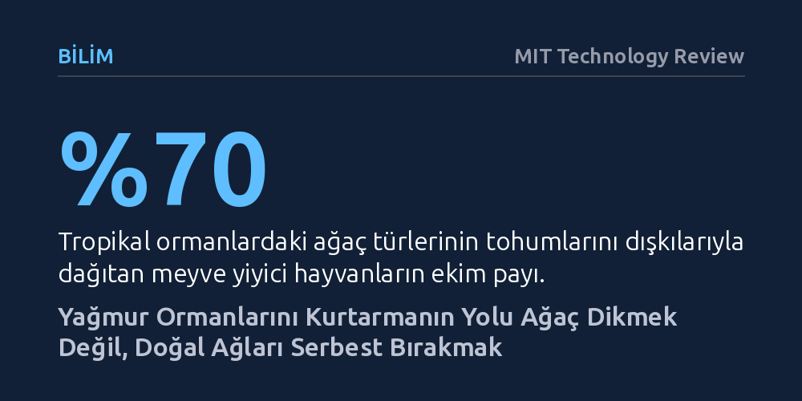

BILIM · MIT Technology Review · 2026-10-13
Tropikal yağmur ormanları insan eliyle tek tip fidan dikilerek değil, tohum dağıtıcı hayvanların kurduğu doğal ağlar korunduğunda çok daha dayanıklı toparlanıyor. Doğal yolla yenilenen ikincil ormanlar, karbonu yaşlı ormanlara kıyasla yılda 11 kat daha hızlı emerek maliyetsiz bir iklim çözümü sunuyor.
İklim krizine karşı trilyonlarca ağaç dikme projelerinin pahalı birer hata olabileceğini, asıl kurtarıcının tohum taşıyıcı hayvanlar ve doğanın kendi onarım gücü olduğunu gösteriyor.

İklim değişikliğiyle mücadelede küresel ölçekte en çok kabul gören reçetelerden biri, geniş arazilere yüz milyonlarca fidan dikmek oldu. 2015 Paris İklim Anlaşması’nın ardından dünya liderleri, gezegenin emisyonlarını telafi etmek için trilyonlarca ağacı yeniden yetiştirme vaatleri etrafında birleşti. Girişimler tohum saçan insansız hava araçları ve besin kaplı tohum bombaları gibi yüksek maliyetli teknolojiler geliştirirken, arka planda devasa arazilere tek tip ağaç fidanları dikilen monokültür plantasyonları türedi.
Ancak orman ekoloğu Daisy Dent’in yirmi yılı aşkın araştırmaları, bu yaklaşımın pahalı ve kırılgan bir hata olabileceğini kanıtlıyor. Geniş alanları tek bir ağaç türüyle donatmak yerine doğayı kendi haline bırakmak, sadece onlarca yıl içinde çok daha dirençli ekosistemlerin yeşermesini sağlıyor. Dahası, doğal yollarla yeniden büyüyen bu ormanlar, atmosferden devasa miktarlarda karbondioksiti çok daha hızlı emme kapasitesine sahip.
Bu gerçeği anlamak için Panama Kanalı’nın 1914’te inşası sırasında sular altında kalan ve adacıklara dönüşen Barro Colorado Tabiat Anıtı’ndan daha iyi bir yer bulmak zor. Smithsonian Tropikal Araştırma Enstitüsü çatısı altında bir asırdan uzun süredir korunan bu bölgede, 19. yüzyıldan bu yana kendi kendine gelişen orman parselleri inceleniyor. Dent’in takip ettiği, ölçtüğü ve haritalandırdığı binlerce ağacın tek biri dahi insan eliyle dikilmedi.
Bölge, yalnızca genel bir ağaçlanma tablosu sunmakla kalmıyor; onlarca yıllık demografik veriler sayesinde ekosistemin mekanizmasını gözler önüne seriyor. Tarım veya hayvancılık amacıyla tamamen tıraşlanan bazı arazilerin hızla antik bir balta girmemiş orman zenginliğine ulaştığı, bazılarınınsa tek bir türe sıkışıp tıkandığı burada açıkça görülüyor. Bu farkın anahtarı ise fidan fırlatan dronlar değil, ekosistemin görünmez sakinleri.
Tropikal ormanlardaki ağaçların yüzde 70’inden fazlasının tohumu, meyveyle beslenen hayvanlar tarafından ekiliyor. Örümcek maymunları, yarasalar ve papağanlar, besin değeri yüksek dışkılarıyla tohumları geniş alanlara yayarak ormanın asıl mimarlığını üstleniyor. Örneğin Barro Colorado’daki 70 yıllık bir parselde onlarca farklı hayvan türünün iş birliği sayesinde bugün zenginliği ve katmanlarıyla kadim bir ormanı aratmayan muazzam bir örtü oluşmuş durumda.
Buna karşılık, tohum dağıtımı yalnızca aguti adı verilen tek bir kemirgen türüne kalan parsellerde, neredeyse sadece tek bir ağaç türünün baskın olduğu tekdüze bir yapı ortaya çıkıyor. Hatta bazen sığır yetiştiricilerinin ektiği inatçı çimler diğer türlerin tutunmasını engelleyerek ormanın ikinci dalgasını 150 yıl boyunca geciktirebiliyor. Dent’in belirttiği gibi, “Tropikal ormanların temelinde bu devasa etkileşim ağı yatıyor.” Mantarlardan tozlaştırıcılara kadar uzanan bu canlı ağını desteklemeden gerçek bir orman yaratmak mümkün olmuyor.
Ormansızlaşmanın ve insan faaliyetlerinin sonucunda, günümüz tropikal gölgeliklerinin yaklaşık yüzde 70’ini ikincil ormanlar, yani tahribatın ardından kendiliğinden büyüyen ormanlar oluşturuyor. Dent’in uluslararası araştırma ağıyla birlikte Nature dergisinde yayımladığı bulgulara göre, doğal olarak yenilenen bu ikincil ormanlar, güneşe ulaşmak için hızla yarışan genç ağaçlar sayesinde, yaşlı bir ormana kıyasla yılda 11 kat daha fazla karbon yakalayabiliyor.
2024 yılında Nature’da yayımlanan küresel bir tahmin ise Meksika’dan daha geniş bir alanın—yaklaşık 215 milyon hektar ormanın—tek bir tohum dahi ekilmeden doğal yollarla yenilenebileceğini gösteriyor. Üstelik araştırmalar, ağaç örtüsü yüzde 35 seviyesine kadar düşmüş alanların bile etrafında sağlıklı yaban hayatı varsa kendi kendine tamamen toparlanabileceğini ortaya koyuyor.
Tüm bu bulgular her arazinin kendi haline bırakılabileceği anlamına gelmiyor. Aşırı derecede tahrip edilmiş, yaban hayatını tamamen kaybetmiş “sessiz ormanlar” veya terk edilmiş eski sığır çiftlikleri bazen kendi kendine iyileşemiyor. Bu noktada devreye toptan fidan dikimi yerine, doğal toparlanmayı hızlandıran koridorlar açmak ve eksik hayvan türlerini yeniden alana kazandırmak gibi “destekli doğal yenilenme” yöntemleri giriyor.
Karbon kredisi piyasasında dev teknoloji şirketlerinin artık ton başına 5 dolarlık ucuz fidan plantasyonları yerine, nitelikli ve kalıcı doğal yenilenme projelerine on kat daha fazla ödeme yapması da bu paradigma değişimini hızlandırıyor. Yine de orman restorasyonunu yöneten karar vericilerin, doğanın kendi karmaşık ağlarına güvenmek yerine manzaraya hâlâ insan iradesini dayatmakta ısrar etmesi en büyük çelişki olarak kalmaya devam ediyor.